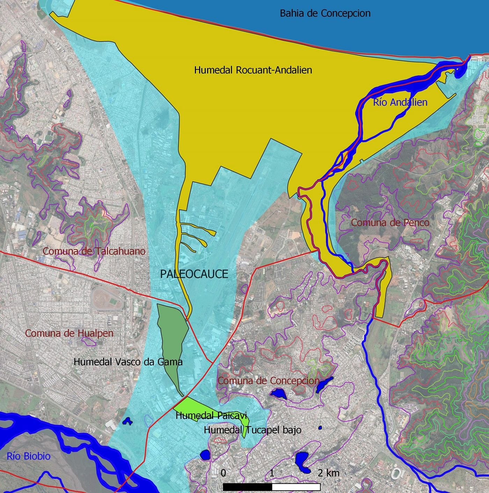

El negocio del Humedal Paicaví
Cómo el Estado, una inmobiliaria, una Entidad Patrocinante (EP) del SERVIU y un movimiento social descompuesto y cooptado, se reparten un humedal urbano en Concepción y amenazan su destrucción en el contexto del cumpleaños 476 de la ciudad.

LA ESCENA
En las riberas del estero Paicaví, en el corazón del Gran Concepción, las máquinas ya trabajan. Donde hace décadas crecen totoras, anidan garzas, y cisnes, se comienza a cercar y rellenar para construir las primeras torres de un megaproyecto que, en su conjunto (3 proyectos), sumará más de mil departamentos. El terreno no es cualquiera: es un humedal urbano en proceso de formalización, un colchón hidrológico natural que durante siglos ha amortiguado las crecidas del estero y captado las aguas lluvias del sector que, según la propia Seremi de Medio Ambiente, forma parte de un sistema interconectado con las lagunas Lo Méndez, Lo Galindo, Humedal Rocuant Andalién y Humedal Vasco de Gama. Todo el sistema parte del antiguo paleo cauce del Río Biobío.
En 2023 el Estado chileno, a través del SERVIU Biobío, decidió comprarlo para el desarrollo de viviendas sociales. Lo hizo antes de que existiera cualquier aprobación ambiental vigente. Pagó 36.000 UF a privados —cerca de 1.300 millones de pesos— amarrando fondos fiscales a un predio de 3,4 hectáreas cuyo decreto de protección había sido judicialmente suspendido por demandas judiciales de los propios dueños. Lo hizo, en definitiva, según indicaron, para entregárselo a los comités de vivienda de la FENAPO, la Federación Nacional de Pobladores.
Lo que sigue es un intento de radiografía a un problema mucho más amplio que la barbaridad de querer construir sobre un humedal. Se trata de una alianza espuria entre —inmobiliarias, el Estado, un movimiento social cooptado y el oportunismo político— que, bajo la noble bandera de la "vivienda social", está ejecutando uno de los negocios inmobiliarios más cuestionados de la última década en el centro-sur de Chile.
LA COMPRA QUE SESGÓ TODO
La adquisición del predio de 3,4 hectáreas por 36.000 UF ($1.300 millones) fue gestionada y firmada por María Luz Gajardo Delgado, Directora Regional del SERVIU Biobío, en octubre del año 2023. La operación se ejecutó al alero de las facultades excepcionales que le otorgaba el Plan de Emergencia Habitacional (PEH) impulsado por el Gobierno de Gabriel Boric el 2022.
Los dueños del terreno por ese entonces eran la Familia Brito, dueños de la inmobiliaria CISS (Consorcio Inmobiliario San Sebastián), controlado por dicha familia penquista. Particularmente Jorge Brito Nachmann (gerente general / representante).
La familia Brito creó una sociedad por acciones (SpA) específica para desarrollar un proyecto, en este caso, "Fuentes de Aníbal Pinto I y II" a través de Inmobiliaria Fuentes de Aníbal Pinto SpA, donde aparece el mismo Jorge Brito Nachmann como representante legal. Se trata de una "estrategia legal y financiera" estándar en el rubro inmobiliario chileno. Sirve para aislar los riesgos financieros y de seguros de una sola obra sin comprometer a la empresa matriz. Aunque el RUT que figura ante el Servicio de Evaluación Ambiental (SEA) es el de la SpA, detrás del financiamiento, la gestión y el equipo técnico —liderado por Jorge Brito Nachmann— está la estructura y el respaldo operativo de Inmobiliaria y Constructora CISS. Ellos manejan el terreno y construirán uno de los proyectos, que consiste en 19 torres de departamentos del subsidio DS19.
La operación se estructuró de la siguiente manera:
- El trato por 36.000 UF se cerró directamente entre el SERVIU y las sociedades de la Inmobiliaria CISS. Ellos eran los dueños legales de los lotes.
- Al concretar la venta en octubre de 2023, la Inmobiliaria CISS firmó el contrato aceptando la llamada "cláusula resolutoria". Es decir, una cláusula que indicaba que si el proyecto definitivo "Parque Solidario Sandra Oliva" de la FENAPO es bloqueado en tribunales debido a las reclamaciones por daño ambiental al humedal, Inmobiliaria CISS está obligada a devolverle al Estado cada peso de las 36.000 UF y el predio inundable vuelve a quedar en sus manos. Es decir, el SERVIU y la funcionaria que habilita el trato, estaban muy conscientes de los problemas del negocio.
Por otro lado está la FENAPO y su "Proyecto Habitacional Social DS 49 MINVU, Parque Solidario, Sandra Oliva I y II" tramitado por "Servicios Financieros e Inmobiliarios Credyhogar Limitada" de propiedad de David Arsenio Vásquez Alarcón.
La Familia Sáenz y la Inmobiliaria Madesal, quienes tramitaron por su propia cuenta un proyecto privado de torres de departamentos llamado "Borde Vista" ingresado oportunistamente el 6 de marzo de 2026. Y que a través de Agrícola Laguna Redonda S.A., junto a Inversiones Valmar Ltda, Fuentes de Aníbal Pinto SpA y Fuentes de Aníbal Pinto 2 SpA, fueron quienes iniciaron el ataque judicial contra la Resolución Exenta N° 380, de 27 de abril de 2022, del Ministerio del Medio Ambiente, en lo que respecta a la declaración del Humedal Urbano Paicaví-Tucapel Bajo.
Veamos el engranaje completo del negocio:
En el Humedal Paicaví convergen tres familias inmobiliarias diferentes que se benefician del mismo ecosistema a destruir:
- Familia Brito (Inmobiliaria CISS): Vendedores del terreno al Estado, se benefician de la cláusula de retroventa y de la propia construcción del proyecto.
- Familia Sáenz (Inmobiliaria Madesal): Dueños de lote colindante, proyecto privado "Borde Vista".
- Familia Vásquez Alarcón (Credyhogar): Dueños de la Entidad Patrocinante, que cobran honorarios por gestión.
El Estado chileno, a través del SERVIU, inició todo el proceso al comprar el terreno a la Familia Brito, que se lo entregó a los comités de la FENAPO, quienes contrataron a la Entidad Patrocinante de la Familia Vásquez Alarcón para gestionar el proyecto. Esta es la jugada que presiona todo el proyecto, tal como consta en los documentos de la causa. Por tratarse de viviendas sociales de un numeroso grupo de pobladores sin casa de la intercomuna.
LA MANIOBRA DE LA FRAGMENTACIÓN
El megaproyecto del Paicaví no se presentó como tal. Se fragmentó en al menos tres iniciativas independientes para ingresar al Sistema de Evaluación de Impacto Ambiental (SEIA) mediante Declaraciones de Impacto Ambiental (DIA), un trámite rápido y de menor exigencia técnica que el Estudio de Impacto Ambiental (EIA) que requeriría la envergadura total de los proyectos en conjunto:
- Parque Solidario Sandra Oliva I y II (500 departamentos, 13 torres) — FENAPO / Credyhogar
- Condominio Fuentes de Aníbal Pinto I y II (350 departamentos, 19 edificios) — Constructora Galilea
- Proyecto Tucapel Bajo — ingresado al SEA a inicios de 2026
Ante el hecho de que los proyectos de la FENAPO y Fuente de Aníbal Pinto parecen un espejo o ser parte de un proyecto mayor, pues están tan pegados (a menos de 100 metros) uno del otro, en marzo de 2025, la propia Seremi de Medio Ambiente del Biobío dejó constancia oficial en sus informes técnicos de que los proyectos compartían características tan similares que constituían, en los hechos, "un solo gran proyecto habitacional fragmentado por motivos económicos y judiciales". La Seremi advirtió que esta práctica evadía el rigor de un EIA unificado, que habría exigido evaluar el impacto acumulativo sobre el humedal y el sistema hidrológico completo.
Pero la potestad de rechazar o forzar un cambio de modalidad recae en la Dirección Ejecutiva del SEA y en la votación política de la COEVA. Como el SEA central estimó que los proyectos cumplían formalmente por separado con la normativa sectorial, las advertencias de la Seremi quedaron archivadas como observaciones técnicas "subsanadas" en el papel por las obras de mitigación prometidas por cada proyecto particular.
Es importante precisar que la fragmentación de proyectos para evadir el umbral del EIA no constituye un delito en la normativa chilena actual. Es una práctica que aprovecha un vacío regulatorio. Pero es, sin duda, una maniobra estratégica poco ética y ambientalmente irresponsable, que ha sido denunciada por organizaciones ecologistas como una forma de "muerte por mil cortes" de los ecosistemas protegidos.
El objetivo de esta fragmentación estaba claro: blindar la operación frente a la Contraloría y frente a cualquier observación técnica posterior. Al mantener cada proyecto por debajo de los umbrales que exigen un EIA, y al aprovechar que el Plano Regulador Comunal aún no había modificado el uso de suelo, la operación se volvía administrativamente perfecta e inatacable para los fiscalizadores formales.
El papel de la consultora GESTEC
El rol de Gestec (Gestión Técnica y Consultoría Ambiental) es central y es, de hecho, el puente oculto que conecta los proyectos del Humedal Paicaví. Gestec es la consultora ambiental privada contratada para defender y viabilizar los proyectos ante el Estado. Su papel genera una fuerte polémica por los siguientes puntos:
- Elaboración de las DIA: Gestec fue la encargada de redactar y tramitar las Declaraciones de Impacto Ambiental (DIA) tanto para el proyecto de los Brito (Fuentes de Aníbal Pinto SpA) como para el proyecto contiguo de la FENAPO (Sandra Oliva / Credyhogar).
- La premisa del "terreno degradado": Para lograr que el Servicio de Evaluación Ambiental (SEA) aprobara las obras sin exigirles un costoso y largo Estudio de Impacto Ambiental (EIA), Gestec defendió técnicamente la tesis de que el área a intervenir no es un humedal funcional, sino un suelo degradado e históricamente rellenado con escombros. Esta postura chocó directamente con los informes del Municipio de Concepción y la Seremi de Medio Ambiente, que demostraron con fotografías aéreas que en el lugar hay flora hidrófila y afloramientos de agua subterránea.
- La arista del Conflicto de Intereses: El caso estalló públicamente debido a que los vecinos y movimientos de defensa ambiental denunciaron un presunto conflicto de interés en las evaluaciones. El actual Seremi de Medio Ambiente del Biobío, Mario Delannays, aprobó y defendió el avance de los proyectos en el humedal (pese a los informes negativos de su propio equipo técnico regional). La controversia radica en que Delannays, en sus años fuera del servicio público (entre 2022 y 2024), trabajó activamente en el sector inmobiliario de la región como Gerente de Sostenibilidad (en firmas como Madesal), lo que para los denunciantes explica por qué se validaron los informes emitidos por Gestec para beneficiar a las constructoras.
En resumen: Gestec aparece como el cerebro técnico que armó las carpetas ambientales para que tanto el proyecto de la FENAPO como el de la familia Brito (CISS) pasaran la valla del SEA, utilizando el mismo argumento de que el humedal ya estaba "destruido" para pavimentar la aprobación de las más de 850 viviendas en total.
La consultora Gestec SpA (registrada legalmente como Gestión Técnica Consultora Ambiental SpA) fue fundada en el año 2000 en Concepción y está controlada principalmente por los siguientes socios y accionistas:
- Claudia Virginia Cendra Esparza: Fundadora original y una de las socias mayoritarias. Es ingeniera civil química egresada de la Universidad de Concepción. Ha liderado técnicamente las asesorías ambientales a gremios industriales (como el pesquero) e inmobiliarios de la zona por más de dos décadas.
- Claudio Alberto Pérez Rudolph: Socio director y accionista con igual peso de participación que Claudia Cendra dentro de la SpA. Cuenta con una amplia trayectoria técnica en el Biobío, habiendo trabajado previamente en sanitarias de la zona como Essbio.
- Gustavo Arnoldo Birke Riquelme: Socio minoritario y actual Gerente de Sostenibilidad y Medio Ambiente de Gestec. Es el rostro técnico de la consultora que habitualmente firma las respuestas a las observaciones ciudadanas y lidera las defensas en terreno ante el Servicio de Evaluación Ambiental (SEA).
Ellos tres concentran la propiedad y la administración general de la firma que, operando desde sus oficinas en San Pedro de la Paz, se transformó en la pieza clave para la tramitación ambiental paralela de los proyectos del Humedal Paicaví.
Las conclusiones principales de los informes técnicos que elaboró y firmó la consultora Gestec (representada por Gustavo Birke) para el proyecto "Condominio Fuentes de Aníbal Pinto I y II" de la familia Brito, se diseñaron con un objetivo claro: demostrar que el proyecto no requería un Estudio de Impacto Ambiental (EIA) extenso y que bastaba con una Declaración (DIA) simplificada.
Los argumentos y conclusiones clave presentados ante el Servicio de Evaluación Ambiental (SEA) y que luego sirven de argumento a la FENAPO como veremos más adelante, se resumen en los siguientes puntos:
- 1. La tesis del "Suelo Degradado y Relleno Histórico": La conclusión central de Gestec es que el terreno seleccionado para las 19 torres ya no funciona como un humedal natural prístino. Sostienen que el lote sufrió intervenciones humanas severas en el pasado y acumulación de escombros. Al catalogarlo como un "suelo degradado", concluyeron que la edificación de los departamentos no alteraría un ecosistema virgen, sino que recuperaría una zona urbana eriaza y previamente impactada.
- 2. Inexistencia de Efectos Características o Circunstancias (Art. 11 de la Ley 19.300): Para evitar que el proyecto fuera obligado a someterse a un EIA, los informes de Gestec concluyeron taxativamente que la obra no generaba riesgo para la salud de la población ni efectos adversos significativos sobre los recursos naturales (como el suelo, agua y aire). Afirmaron que el despeje de terreno y la cimentación no interrumpirían los flujos hídricos de la cuenca general del Humedal Rocuant-Andalién, a la cual pertenece Paicaví.
- 3. Descarte del "Impacto Sinérgico" o Acumulativo: A pesar de que el Municipio de Concepción y la Seremi de Medio Ambiente advirtieron que la suma de este proyecto con el de la FENAPO causaría estragos, Gestec concluyó en sus documentos que cada proyecto debía ser evaluado estrictamente dentro de sus propios límites prediales. Técnicamente determinaron que las medidas de mitigación individuales (como colectores de aguas lluvias propios) eran suficientes, descartando que la construcción paralela generara un "efecto dominó" de inundaciones en los barrios circundantes.
- 4. Ausencia de Especies con Problemas de Conservación Críticos: En sus líneas de base de flora y fauna, la consultora concluyó que el área específica a intervenir no albergaba poblaciones significativas de especies nativas bajo amenaza crítica (como la rana chilena) que justificaran paralizar el avance habitacional, determinando que los avistamientos en el Humedal Paicaví se concentran en otras áreas del polígono y no en sus lotes.
Estas conclusiones fueron totalmente válidas para el SEA Biobío, el cual terminó aprobando el proyecto bajo la premisa de que cumplía formalmente con la normativa. Sin embargo, son el corazón de la polémica actual: las organizaciones sociales y la municipalidad alegan que los informes ocultaron la verdadera funcionalidad hídrica del terreno. Tras un rechazo de reclamación en la dirección ejecutiva del SEA en septiembre de 2026, la contienda se trasladó al Tercer Tribunal Ambiental de Valdivia, donde los jueces ambientales deberán dirimir si las conclusiones de Gestec se ajustan a la realidad científica del humedal o no. Sin embargo, son el corazón de la polémica actual: las organizaciones sociales y la municipalidad alegan que los informes ocultaron la verdadera funcionalidad hídrica del terreno.
EL NEGOCIO DE LA ENTIDAD PATROCINANTE
El proyecto "Sandra Oliva I y II" es articulado por Servicios Financieros e Inmobiliarios Credyhogar Ltda., cuya propiedad mayoritaria (70%) pertenece a David Arsenio Vásquez Alarcón. La Entidad Patrocinante (EP) cumple un rol clave en el modelo del DS49: organiza a los comités de vivienda, diseña el proyecto arquitectónico, gestiona la postulación al subsidio y cobra honorarios regulados por el MINVU por cada familia adjudicada.
Bajo la normativa vigente, una EP puede percibir entre el 10% y 15% del valor total del subsidio gestionado, o un monto fijo de aproximadamente 100 a 150 UF por unidad. Para los 500 departamentos del Sandra Oliva, esto representa una estimación de entre 50.000 y 75.000 UF (entre 1.800 y 2.700 millones de pesos) en honorarios, sin asumir ningún riesgo financiero: el Estado paga por adelantado y asume el riesgo del terreno.
La falla estructural del DS49
Este modelo expone un vacío normativo de enormes consecuencias sociales: la normativa actual no establece límites éticos ni ambientales sobre qué terrenos pueden gestionar las EP. Una Entidad Patrocinante (EP) puede tomar un humedal, un lecho de río o un suelo con riesgo de licuefacción, armar el comité, cobrar sus jugosos honorarios por la gestión, y si el proyecto fracasa o se inunda en diez años, la responsabilidad es del Estado y de los pobladores. La EP ya cobró.
El sistema, tal como está diseñado, incentiva a las EP a buscar los terrenos más baratos y conflictivos, maximizando su margen de ganancia a costa de la seguridad futura de los habitantes. Es, en la práctica, una subcontratación del riesgo social: el privado se queda con la utilidad, el Estado y los pobres asumen la pérdida.
LA COOPTACIÓN DEL MOVIMIENTO SOCIAL
Más allá de las justificaciones ideológicas, el caso de la FENAPO y sus dirigentes representa un doloroso caso de descomposición ética del movimiento social producto del embate neoliberal. Lo más grave es que estos dirigentes en rigor se autodefinen o definían como izquierda. Su dirigencia visible fueron militantes del Partido Igualdad (colectividad que surgió de los movimientos sociales y que levanta la consigna de "herramienta de los pueblos"), y sin embargo hoy ya fuera de la orgánica, están facilitando un negocio inmobiliario que destruye un humedal.
Los principales dirigentes de la FENAPO involucrados en el caso Paicaví son:
- Alexis Parada Osorio: Histórico líder de la Toma de Peñalolén (1999), ex militante del Partido Igualdad, que hoy opera como "Gestor de Intereses Particulares" registrado bajo la Ley de Lobby.
- Gustavo Sotomayor: Dirigente nacional de la FENAPO, ex militante del Partido Igualdad, articulador de comités de vivienda.
- Ronald Valenzuela: Dirigente de la FENAPO, ex militante del Partido Igualdad, gestor técnico de postulaciones al subsidio DS49.
La traición a los principios de la izquierda
Históricamente, el movimiento de pobladores luchaba contra la mercantilización del suelo y la especulación inmobiliaria. El Partido Igualdad, del cual estos dirigentes fueron militantes, nació precisamente de la crítica al modelo neoliberal de vivienda y de la defensa del derecho a la ciudad frente al mercado.
Sin embargo, hoy la FENAPO actúa como una suerte de "subcontratista social" del Estado y las inmobiliarias. Su rol ya no es disputar el modelo, sino facilitar su operación a cambio de una cuota de poder. Han pasado de ser opositores del sistema a ser sus facilitadores, traicionando los principios que los llevaron a la militancia política.
El cinismo de la justificación
Argumentar que "si no lo hacemos nosotros, lo hará una inmobiliaria de lujo" es una falacia que oculta la realidad: ellos están haciendo exactamente lo mismo que haría la inmobiliaria de lujo, pero usando la fachada de la "vivienda social" para obtener subsidios estatales, aprobación ambiental rápida y legitimidad política.
EL TRUEQUE POLÍTICO: LA ALIANZA FRVS-FENAPO
El cinismo político alcanza su máxima expresión con la alianza entre la FENAPO y el Frente Regionalista Verde Social (FRVS) del diputado Jaime Mulet. El FRVS, que lleva la palabra "Verde" en su nombre y que en sus estatutos defiende la protección de ecosistemas, le cedió cupos electorales a dirigentes de la FENAPO —quienes empujan activamente el relleno del Humedal Paicaví. No existe ninguna relación directa, institucional ni judicial entre Mulet, su partido y el proyecto de Concepción. Mulet es un parlamentario cuya base electoral está concentrada en la Región de Atacama, y el FRVS no tiene injerencia en las negociaciones de los comités del Biobío. Pero la alianza existe, y es profundamente reveladora.
No existe ninguna relación directa, institucional ni judicial entre Mulet, su partido y el proyecto de Concepción. Mulet es un parlamentario cuya base electoral está concentrada en la Región de Atacama, y el FRVS no tiene injerencia en las negociaciones de los comités del Biobío. Pero la alianza existe, y es profundamente reveladora.
El trueque de supervivencia
Esta alianza no es ideológica, es transaccional. Se explica por tres razones:
- La necesidad de superar el 5%: El Congreso chileno exigió un umbral mínimo del 5% de votación nacional para que los partidos puedan subsistir. Al ser un partido pequeño (entre 15.000 y 18.000 militantes), el FRVS se ha visto forzado a reclutar pragmáticamente a líderes de movimientos sociales territoriales para sumar votos masivos y mantener su existencia legal.
- La estrategia institucional de la FENAPO: La federación busca deliberadamente posicionar a sus propios líderes como concejales, cores o parlamentarios en cupos que les cedan partidos de izquierda o centroizquierda, obteniendo la plataforma legal para competir sin tener que recolectar firmas como independientes, y asegurar su continuidad.
- La "letra muerta" de la declaración ecológica: En sus estatutos, el FRVS promueve la defensa de los ecosistemas y la protección de los entornos naturales frente al avance inmobiliario. Sin embargo, al otorgar cupos a dirigentes de la FENAPO —quienes defienden activamente construir sobre el Humedal Paicaví—, el discurso ambientalista queda suspendido en favor del beneficio electoral.
Para las directivas políticas, la justificación suele ser que los partidos son "plataformas amplias" donde conviven diversas demandas sociales. Desde esa perspectiva, el derecho a la vivienda digna que levanta la FENAPO se integra como otra bandera de izquierda, omitiendo deliberadamente el impacto ambiental local que ese proyecto específico implica para el Gran Concepción.
Al final, este tipo de pactos demuestra que, ante el riesgo inminente de perder la existencia legal, la supervivencia institucional de los partidos suele priorizarse por encima de la coherencia de su propia agenda verde.
LA INGENUIDAD DEL ECOLOGISMO
Aunque la lucha por la conservación del Humedal Paicaví es legítima y necesaria, el movimiento ambientalista ha mostrado un cierto grado de ingenuidad táctica al centrar casi toda su energía en la batalla técnico-legal (informes hidrológicos, recursos ante el Tribunal Ambiental), descuidando frentes que parecían obvios:
- Falta de presión patrimonial y administrativa: No se ha impulsado con fuerza una investigación formal sobre el rol de la funcionaria María Luz Gajardo Delgado, cuya decisión de comprar el terreno antes de la evaluación ambiental sesgó todo el proceso institucional. La Contraloría validó la legalidad formal, pero nadie ha cuestionado públicamente los conflictos de interés políticos que derivan de esa decisión.
- Evitación del conflicto ético con la FENAPO: Por un afán de no generar "conflictos innecesarios" dentro de la convivencia social, considerando que sufrieron agresiones y amenazas de miembros de la FENAPO, el medioambientalismo ha evitado exponer públicamente y con contundencia la debacle ética de los dirigentes sociales de la FENAPO. Al no deslegitimar socialmente su rol de "subcontratistas" del negocio inmobiliario, el movimiento ambientalista cedió el relato de la "justicia social", permitiendo que la FENAPO se presente como la única defensora de los pobres, cuando en la práctica están facilitando un negocio que pone en riesgo a esas mismas familias.
- La trampa del "derecho a la ciudad": El ecologismo no supo responder con fuerza al argumento de la FENAPO de que "si no lo hacemos nosotros, lo hará una inmobiliaria de lujo". La respuesta debió ser clara: ustedes están haciendo exactamente lo mismo, pero con subsidios estatales. No hay diferencia sustancial entre construir 500 departamentos de vivienda social o 500 departamentos ABC1 en un humedal: en ambos casos se destruye el ecosistema y se expone a los futuros habitantes al riesgo de inundación.
Por último, lamentablemente, la demanda, la defensa del humedal no ha logrado construir la masividad necesaria que ayudaría a defender la ciudad de los intereses inmobiliarios.
EL ROL DE LA MUNICIPALIDAD DE CONCEPCIÓN
Mientras la ciudad se prepara para celebrar su histórico aniversario, la pérdida de su principal humedal urbano ha generado una reacción institucional que, aunque valiosa, llega con el reloj en contra. El alcalde Héctor Muñoz Uribe y el Concejo Municipal han respaldado la defensa del Paicaví. En mayo de 2026, el Concejo respaldó unánimemente la defensa del humedal y comprometió acciones legales junto a los vecinos. La Municipalidad envió un oficio al Ministerio del Medio Ambiente pidiendo intervención y revisión del proyecto. Además, en junio de 2026, interpuso un recurso de protección ante los tribunales para intentar resguardar el patrimonio natural y frenar las obras.
Pero la crítica es inevitable: la Municipalidad no ejerció su poder de planificación urbana con la anticipación necesaria. El Plano Regulador Comunal de Concepción no modificó el uso de suelo del sector Paicaví antes de que el SERVIU concretara la compra y la COEVA aprobara los proyectos. Cuando el decreto de Humedal Urbano fue judicializado por los propietarios privados, la Municipalidad no actuó con la celeridad necesaria para blindar el ecosistema.
Hoy, el alcalde Muñoz intenta frenar un desastre, en rigor heredado, con recursos legales que, aunque necesarios, llegan cuando las máquinas ya han comenzado a operar, y después de ya casi 2 años de gestión propia. Es la demostración de que en la carrera entre el dinero inmobiliario y la protección ambiental, el segundo siempre sale perdiendo por llegar tarde.
LA COEVA: LOS NOMBRES QUE APROBARON EL DESASTRE
La Comisión de Evaluación Ambiental (COEVA) del Biobío otorgó la Resolución de Calificación Ambiental (RCA) favorable por unanimidad (12 votos a favor, 0 en contra) al proyecto Sandra Oliva I y II. La votación estuvo integrada por:
- Julio Anativia Zamora — Delegado Presidencial Regional (presidente de la COEVA)
- María Eliana Vega Fernández — Directora Regional del SEA (secretaria)
- Mario Delannays Araya — Seremi de Medio Ambiente
- Anselmo Villagra — Seremi de Vivienda y Urbanismo
- Isabel Rojas Salfate — Seremi de Salud
- José Piña Faúndez — Seremi de Obras Públicas
- Henry Campos Coa — Seremi de Transportes y Telecomunicaciones
- Francisco Lagos Arriagada — Seremi de Agricultura
- Javier Salamanca Monge — Seremi de Energía
- Daniel Escobar Palma — Seremi de Minería
- Christian Cifuentes — Seremi de Economía, Fomento y Turismo
- Daniel Manchileo Zeballos — Seremi de Desarrollo Social y Familia
Todos votaron a favor. Todos sabían —o debían saber— que estaban aprobando la construcción de 500 departamentos en un humedal urbano. Ninguno se inhabilitó. Ninguno exigió un EIA unificado para evaluar el impacto acumulativo de los tres proyectos fragmentados. Todos votaron contra el reloj, el plazo para tomar esta medida vence el 23 de octubre de este año.
XI. CONCLUSIÓN: UN ESTADO CAPTURADO
El conflicto del Humedal Paicaví no es un "empate técnico" entre vivienda y medioambiente. Es la evidencia de un Estado capturado por lógicas de mercado, una izquierda social cooptada y un ecologismo que ha subestimado la batalla política.
La funcionaria María Luz Gajardo blindó la operación con una cláusula de devolución que ignora el daño político y ambiental; la Contraloría validó solo el formalismo administrativo sin investigar los conflictos de interés; tres familias inmobiliarias o ligadas a él (Brito, Sáenz y Vásquez Alarcón) se reparten el humedal extrayendo millones en utilidades y honorarios; la FENAPO entregó su coherencia ideológica a cambio de ser un engranaje más en la maquinaria de transformación de un ecosistema; el FRVS vendió su identidad "verde" por supervivencia electoral; y la Municipalidad de Concepción intenta frenar el desastre con recursos legales que llegan tarde.
Mientras tanto, los únicos perdedores son el ecosistema urbano y las familias vulnerables, que terminarán habitando torres construidas sobre un humedal rellenado, pagando con sus cuerpos el precio de un negocio redondo y un movimiento social que traicionó sus principios. La pregunta que queda no es si el proyecto se aprobará o no —las máquinas ya trabajan—, sino cuántos Paicaví más estamos dispuestos a sacrificar en el altar de la "vivienda social" antes de que alguien se atreva a decir la verdad: esto no es justicia social, es especulación inmobiliaria con subsidio estatal, facilitada por dirigentes que se dicen de izquierda pero que actúan como subcontratistas del capital.
Este artículo es una investigación basada en fuentes públicas, documentos oficiales del SEIA, registros de la Ley de Lobby, pronunciamientos de la Contraloría General de la República y declaraciones públicas de las autoridades involucradas. Los nombres y cifras mencionados corresponden a información verificable en los registros institucionales correspondientes.